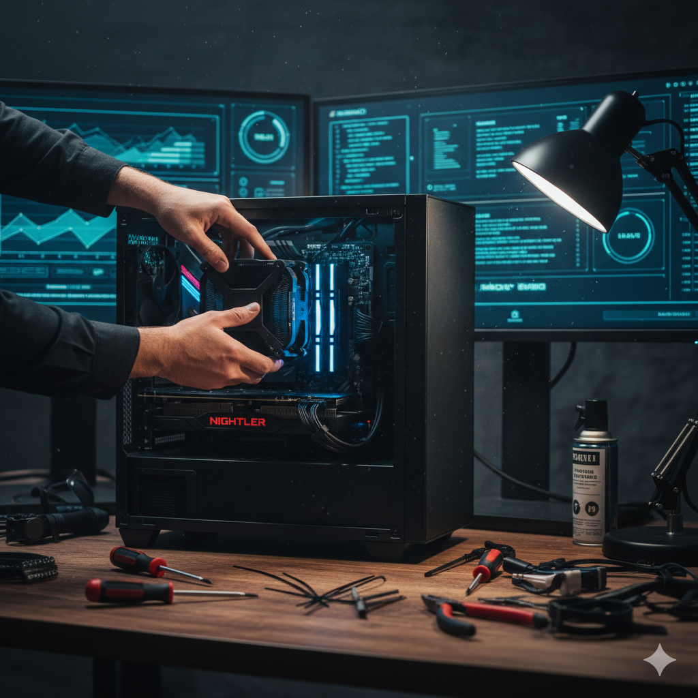
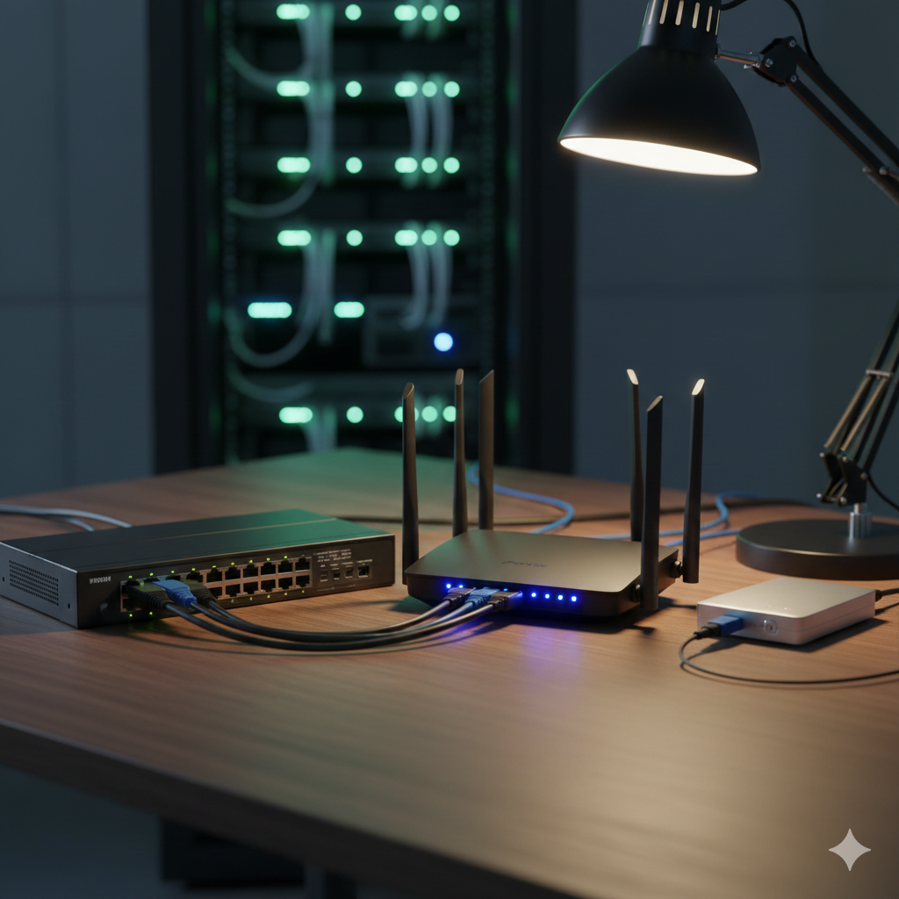
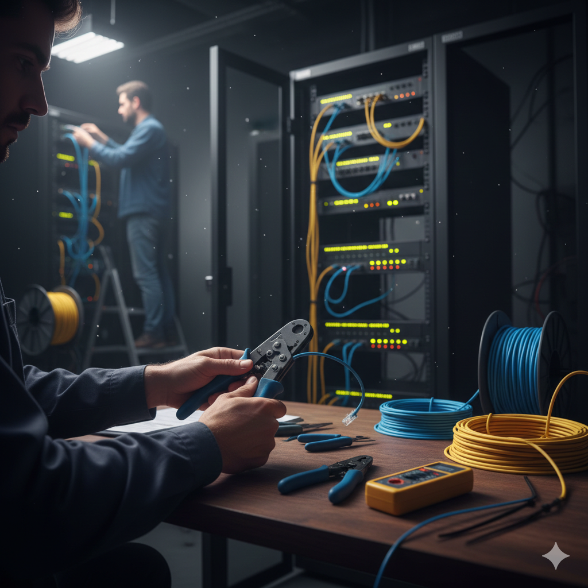

Hardware & Network Specialist
Saya Varian Achmad Kafi Dermawan, berpengalaman dalam perakitan hardware, instalasi LAN, hingga konfigurasi sistem Mikrotik untuk performa maksimal.

Perakitan unit komputer server & workstation.

Manajemen perangkat switch & router enterprise.

Konfigurasi & penataan kabel jaringan (cabling).
Manajemen bandwidth & keamanan Mikrotik OS.
Saya fokus pada perancangan sistem informasi yang efisien melalui integrasi hardware yang tepat dan manajemen jaringan yang terstruktur.